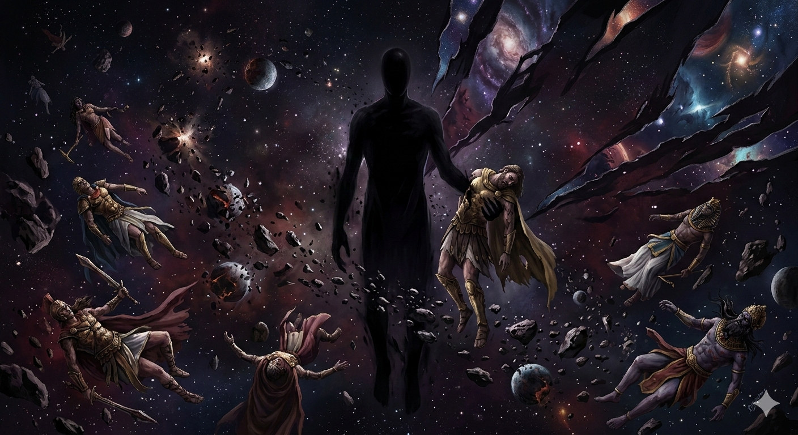
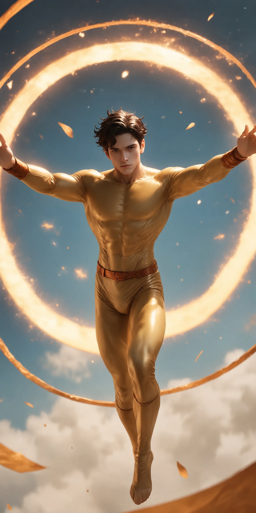
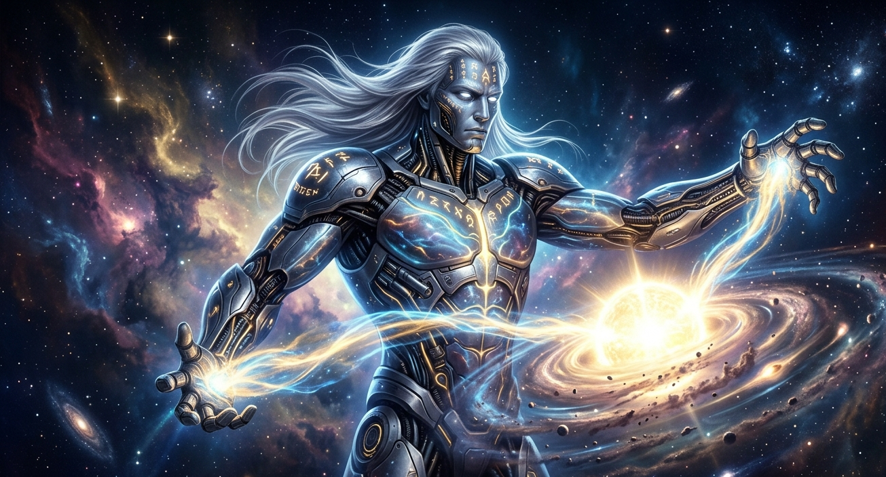
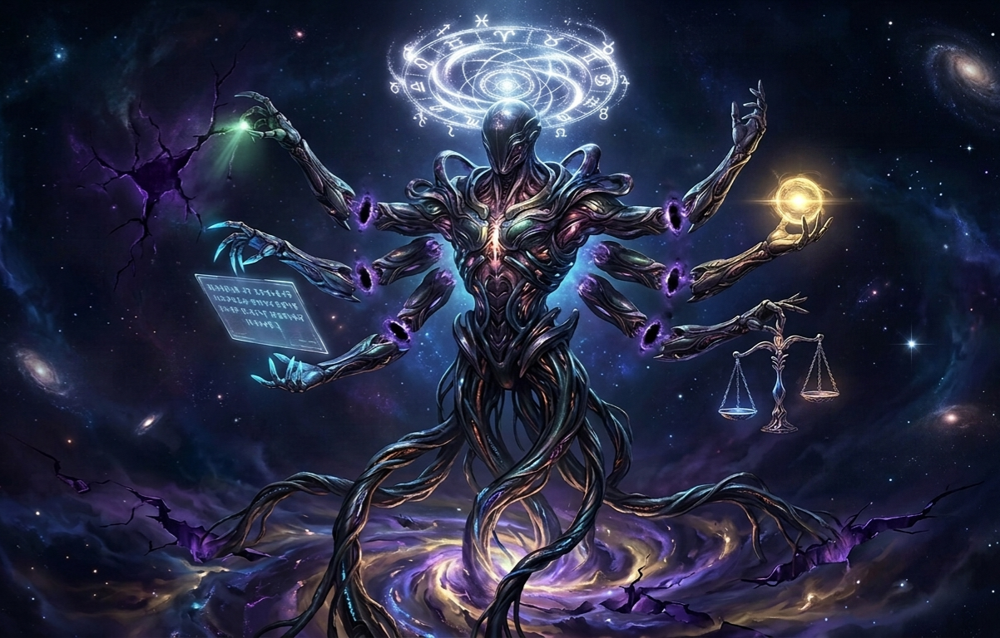
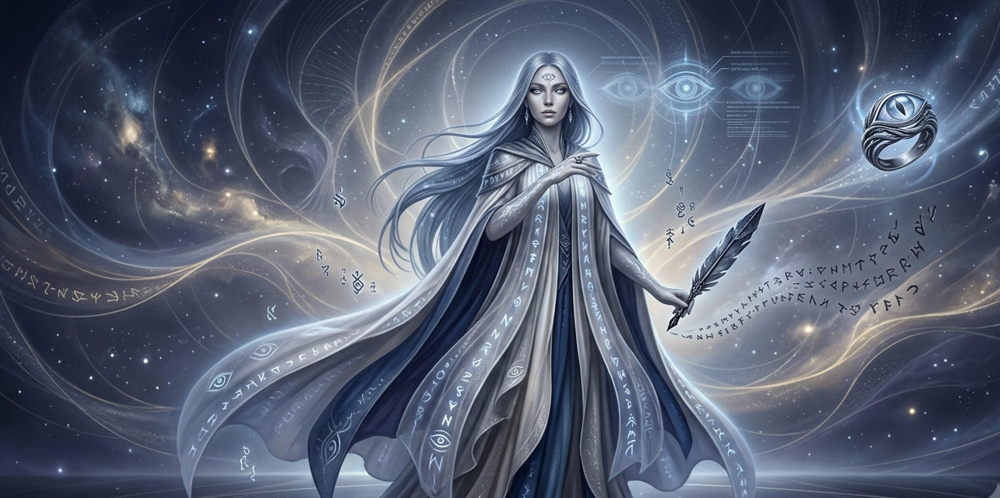
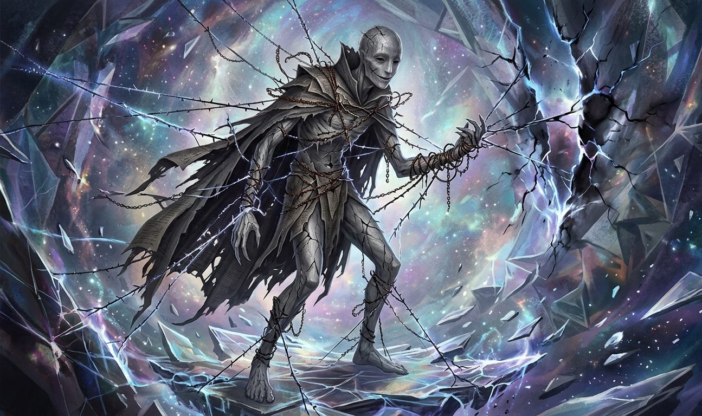
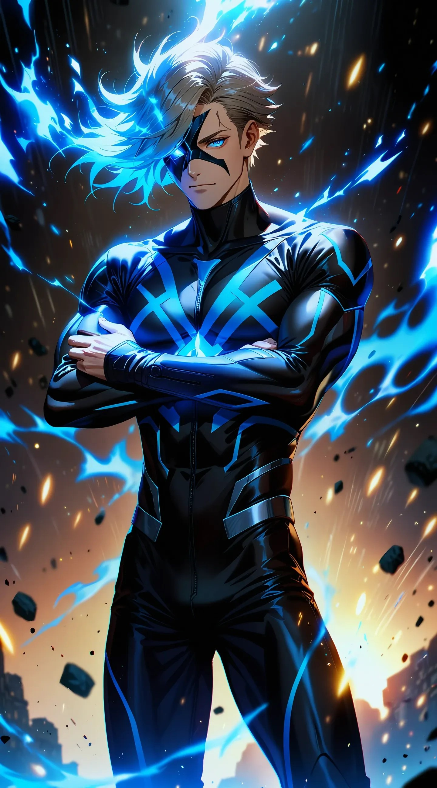
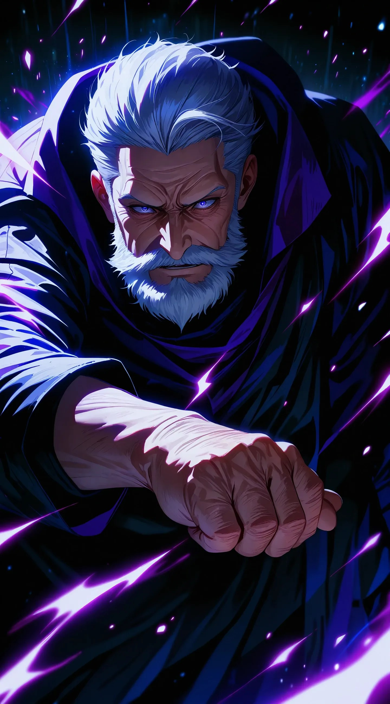
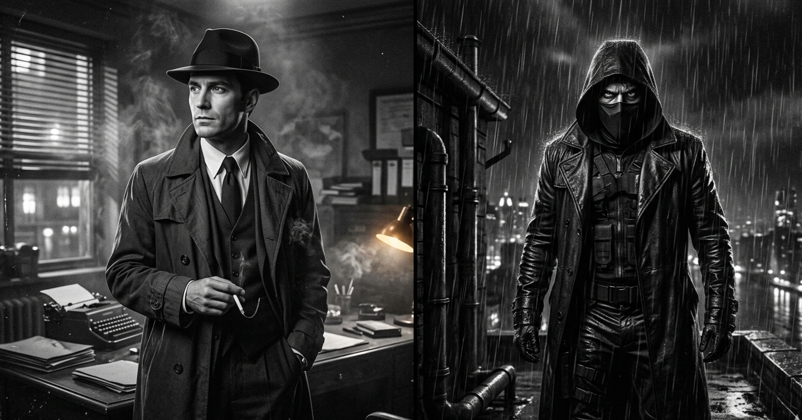

Vertical OS Multiverse Theory
ทฤษฎีพหุภพแนวดิ่งแบบระบบปฏิบัติการ
มิติเรียงตัวแนวตั้งจากล่างขึ้นบน มิติต่างๆ เปรียบเสมือนการอัปเดต Patch ใหม่เพื่อลบและแก้ไขทรัพยากรเก่าของมิติต้านล่าง
สภาวะ NONE (ศูนย์สัมบูรณ์)
ดินแดนดั้งเดิมนอกระบบคอร์ปฏิบัติการทั้งปวง เป็นผืนผ้าใบโอบอุ้มเมล็ดพันธุ์มิติเอาไว้ตั้งแต่แรกเริ่มด้วยความใจกว้างอันไร้ขอบเขต เป็นต้นตระกูลสูงสุด (รุ่นปู่)
มิติที่ 14: ห้วงนิรันดร์แห่งความว่างเปล่า (Max Version)
พื้นที่ปลอดภัยสูงสุดหลังบ้านเอกภพ ที่สถิตของ Void No Definition ร่างเงาดำไร้นิยาม ทำหน้าที่เป็นยางลบ คอยกดสวิตช์ Reality Severance ลบตัวแปรหรือเขียนบทประพันธ์ทับมิติต้านล่างได้ตามเจตจำนงในเวลาอันสั้น
"All gods shall fall when he awakens."
The Council Leng (สภาผู้ตัดสินความเป็นแห่งเทวะ)
ตัวตนที่ถือกำเนิดจากการสั่นสะเทือน (Primordial Resonance) ตั้งแต่ยุคบรรพกาล ปรากฏในรูปของ "ตาชั่งชีวจักรกล" (Biomechanical Arbiter) 7 แขนยึดหยั่งลงบนรอยต่อแห่งมิติ ทำหน้าที่ประมวลผลและตัดสินลดทอนนิยามของสิ่งบิดเบี้ยวหรือ Cosmic Entity ระดับสูงให้กลายเป็นโมฆะจากสายธารเวลาโดยสมบูรณ์
มิติที่ 7: มิติปฏิบัติการของ Arthrilho
พื้นที่ของวิศวกรผู้ถักทอสัจธรรมทางกฎฟิสิกส์ ทำหน้าที่คัดกรองข้อมูล ปรับแก้โครงสร้างของระบบ และลบโค้ดที่มีความผิดปกติหรือไร้ประสิทธิภาพจากมิติด้านล่างทั้งหมด
มิติที่ 10 - 5: เลเยอร์พลังงานควอนตัมและสุริยะ
ชั้นที่ระบบอัปเกรดการควบคุมโมเลกุล ที่ทำงานหลักของ The Zun (น้องชายผู้เจิดจ้า) ผู้ใช้พลังดวงอาทิตย์มิติที่ 5 และเป็นสถิตของ Hermona (ชั้นที่ 8) ธิดาแห่งการหยั่งรู้
Humpling Bound — แพลตฟอร์มมิติแยก (แผ่นบาง)
มิติเศษเสี้ยวที่ถูกบีบอัดซ่อนไว้ระหว่างห้วงหลัก เพื่อกักเก็บและจัดการกับความทรมานหรือบั๊กระบบที่แผ่นหลักมองไม่เห็น ป้องกันการลามเสียสมดุล
มิติที่ 4: คอร์กาลอวกาศหลังบ้าน (อาณาเขตของ Etheron)
ทำหน้าที่เป็นสะพานเชื่อมฟิสิกส์ระหว่างโลกมนุษย์ 3 มิติ กับมิติควอนตัมส่วนบน คุมระบบเสถียรภาพแซนด์บ็อกซ์และสะพานบิฟรอสต์ด้วยตัวนำยิ่งยวด
มิติที่ 3 - 1: โโลกกายภาพและเส้นเวลาปกติ
โลกที่มนุษย์ทั่วไปอาศัยอยู่ เป็นพื้นที่ปฏิบัติการหลักของกลุ่มมนุษย์พิเศษอย่าง Lucien Vesper (The Nocturne) รวมถึงคู่ปรับควอนตัมอย่าง Resonant และ Dampener
System Character Registry
คัมภีร์ฐานระบบทำเนียบตัวละคร
Void No Definition

"All gods shall fall when he awakens." (ทวยเทพทั้งมวลจะล่มสลายเมื่อเขาตื่นขึ้น)
รูปลักษณ์: ร่างจำแลงมีรูปทรงคล้ายมนุษย์ แต่เป็นเงาดำสนิท ไร้ใบหน้า ไร้ดวงตา ไร้ปาก และไร้รายละเอียดใด ๆ สื่อถึงแก่นแท้ของความว่างเปล่าที่อยู่เหนือบทประพันธ์และกฎเกณฑ์ของคนเขียนบททุกจักรวาล (Writer Eraser) ถือกำเนิดมาก่อนแสงแรกและก่อนตรรกะใดๆ ในพหุภพ
• Base Identity (วิทยายุทธ์ทหาร): มีรากฐานความรู้จากทักษะอดีตทหาร มวยไทย และเทควันโด ทำให้มีสมองและความเข้าใจในโครงสร้าง สรีระศาสตร์ จุดอ่อน มวล และทิศทางสายตาอย่างทะลุปรุโปร่ง ไม่ใช่ตัวละครบ้าพลังที่ไร้ความคิด
• Double Madness Aura: แผ่รังสีจิตหลุดลอยระดับสูงสุด สิ่งมีชีวิตหรือเทพองค์ใดที่ต่ำกว่าระดับ Cosmic หากสบตาหรือสัมผัสจะเกิดอาการเสียสติ จิตพังทลาย คลั่ง และน้ำลายฟูมปากทันทีเพราะสมองไม่อาจประมวลผลตัวตนไร้นิยามได้
• Reality Severance & Source Code Rewrite: หากเจอสายโกงหรืออมตะปรับตัวเก่ง จะทำการหยุดเวลาโดยสมบูรณ์เพื่อตัดสายเหตุผล แล้วลงไปจัดเรียงระบบฐานข้อมูล (Source Code) เอกภพใหม่ เขียนทับความจริงตั้งแต่เกิดแสงแรกให้ศัตรูไม่เคยมีตัวตนอยู่เลยแม้แต่เสี้ยววินาทีเดียว
The Zun (น้องชายผู้เจิดจ้า)

สถานะ & รูปลักษณ์: น้องชายแท้ๆ ของ Void No Definition ร่างกายเป็นบุรุษสีทองอร่าม โอบล้อมด้วยวงแหวนเพลิงสุริยะหมวนวนสองชั้นลอยด้านหลัง คาแรกเตอร์ตอนอยู่บนโลกมนุษย์ (Casual Mode) จะเป็นน้องชายสายซื่อที่เคารพรักและเชื่อฟังพี่ชายอย่างที่สุด พกบัตรเครดิตคอยรูดจ่ายตังค์ ถือกระเป๋า และเป็นเทรนเนอร์อยู่ข้างสังเวียน UFC
1. 5th Dimension Star Power: ควบคุม บีบอัด และปลดปล่อยพลังงานความร้อนจากดวงอาทิตย์ในมิติที่ 5 นับล้านดวงได้ตามใจชอบ เจดจ้าที่สุดในพหุจักรวาล
2. Forced Sonic: บินขยับตัวด้วยสปีดสูงสุดที่ฉีกกฎเวลาและระยะทางจนขาดสะบั้น พุ่งผ่านอากาศที่ใด มิติจะแตกละเอียดเป็นเศษกระจกเงาร่วงหล่น ทิ้งคลื่นความร้อนสุริยะระดับล้านองศาแผดเผาสสารจนละลายเป็นพลาสม่า
3. Laser Slicer: ยิงลำแสงเลเซอร์สีทองคมกริบออกจากดวงตา ทำหน้าที่ตัดผ่านโครงสร้างอะตอม สาร สสาร หรือเวทมนตร์บาเรียอันเป็นอมตะให้ขาดครึ่งและสลายเป็นละอองธุลีคอสมิกทันที
⚠️ กฎเหล็กแห่งสายเลือด: แม้จะแข็งแกร่งถล่มมัลติเวิร์สได้ชิลๆ แต่ในเชิงระบบเขาเกิดทีหลังแสงแรก จึงดำรงอยู่ภายใต้ร่มเงานิยามความว่างเปล่าของคนพี่เสมอ ไม่มีวันเอาชนะพี่ชายได้
Arthrilho (ผู้ถักทอสัจธรรม)

สายสัมพันธ์: ผู้รับใช้โดยตรงและมือขวาของ Void No Definition ภายใต้พระบัญชาของ NONE ประจำการอยู่ที่มิติปฏิบัติการชั้นที่ 7 (Quantum-Fusion Catalyst Layer) ตัวตนคือ "วิศวกรไร้ปราณี" และ "ผู้พิพากษาแห่งตรรกะ"
เขาคือเครื่องจักรแห่งความสมดุลที่เย็นชา ปราศจากความโกรธ ความเมตตา หรือความปรารถนาส่วนตัว มองสิ่งมีชีวิตทั้งมวลเป็นเพียง "โค้ด" และ "ข้อมูล" หากมิติหรืออารยธรรมใดเกิดบั๊กรวมถึงมีข้อบกพร่อง เขาจะลงมือปรับแก้เขียนทับทันทีโดยไม่ลังเล แม้ต้องทำลายล้างทั้งกาแล็กซีก็ตาม
• Thread of Absolute Logic: ถักทอและเขียนทับกฎแห่งความเป็นจริงและสัจธรรมฟิสิกส์มิติต่างๆ ได้ตามอำเภอใจ
• Containment Lattice: สร้างตาข่ายกักกันและทำลายสิ่งมีชีวิตหรือพลังงานที่ระบบประมวลผลว่าเป็น "ข้อบกพร่อง"
• Reality Refactor: รีแฟกเตอร์ปรับโครงสร้างมิติใหม่ทั้งหมดหากเห็นว่าระบบเดิมไร้ประสิทธิภาพ
⚠️ ข้อจำกัด: ต้องปฏิบัติตามคำสั่งของ Void No Definition อย่างเคร่งครัดโดยไม่มีสิทธิ์ขัดขืน และมีภาวะ Emotional Blindness ไม่เข้าใจเรื่องไร้เหตุผลอย่างความรักหรือความกล้าหาญ ทำให้อาจประมวลผลประเมินพวกสิ่งมีชีวิตระดับต่ำต่ำไปในบางครั้ง
The Council Leng (สภาผู้ตัดสินความเป็นแห่งเทวะ)

กำเนิดแห่งนิรันดร์: มิได้ถูกรังสรรค์โดยเจตจํานงของสิ่งใด แต่ถือกำเนิดขึ้นจากการสั่นสะเทือน (Primordial Resonance) ในห้วงอวกาศอันห่างไกลโพ้นตั้งแต่ยุคบรรพกาลก่อนทวยเทพและพหุภพใดๆ จะอุบัติขึ้น ดำรงอยู่เป็นจังหวะหัวใจแห่งจักรวาลและรากฐานแห่งความเที่ยงธรรมบนรอยต่อมิติ
• โครงสร้างแขน: มีรยางค์แขนทั้ง 7 ข้างในมิติว่างเปล่า เชื่อมกันด้วยช่องว่างที่กฎฟิสิกส์แตะต้องไม่ได้ (The Void Gaps)
• รยางค์ฐานราก: หยั่งรากลงในรอยต่อมิติ (The Patch/Nexus) เพื่อตรวจจับวิเคราะห์แรงสั่นสะเทือนรอยร้าวที่เทวะก่อขึ้น
• รัศมีปกครอง: มี "วงแหวนจักรราศีแห่งความเป็นไป" (Cosmic Zodiac Crown) สีเงินยวงหมุนประมวลผลคำพิพากษาเหนืออาสน์
• ผู้พิพากษาแห่งรอยร้าว: ตรวจสอบกำจัดภัยคุกคามจากเหล่าทวยเทพ (ระดับเลเยอร์ 5-11) ที่บิดเบือนกฎระบบ
• กฎแห่งคำพิพากษา (The Verdict): ทุกคำกล่าวคือสัจธรรมพหุภพ หากสภาประกาศให้สิ่งใด "เป็นโมฆะ" สิ่งนั้นจะถูกลบล้างสลายหายไปจากทั้งสายธารเวลาและมิติทันที
• Absolute Nullification: ลดทอนพลังระดับสูงสุดของ Cosmic Entity ให้กลายเป็นศูนย์ได้โดยไม่มีข้อโต้แย้ง
Etheron (ผู้กำกับแห่งกาลอวกาศ)
.png)
คุมเสถียรภาพกาลเวลา Sandbox และสะพานบิฟรอสต์หลังบ้านมิติที่ 4 มีเจตจำนงเสรี นิสัยประชดประชัน เล่นใหญ่หน้าตาย (Deadpan Humor) แต่ถ้าหน้างานเกิดบั๊กหรือระบบโดนเจาะรหัส แววตาจะเปลี่ยนเป็นนักล่าสายวินัยทหารเก่าสับสวิตช์บล็อกข้อมูลและลงทัณฑ์ศัตรูใน 2 วินาทีทันที
• กายภาพเหนือมนุษย์: ร่างแกร่งดั่งแร่ออบซิเดียน ซัดหมัดทลายเกราะสสารเหล็กกล้าได้รุนแรงในสนามรบประชิด
• กระแสไฟฟ้ารีไซเคิล: ดักจับแรงเค้นก๊าซอวกาศ (Cosmic Gas Friction) มาควบแน่นแปรสภาพเป็นหอกสายฟ้าล้านองศา
• ตัวนำยิ่งยวด (Bifrost ควอนตัม): ปรับค่าความต้านทานมิติรอบตัวเป็นศูนย์ (0) ส่งข้อมูลและมลสารข้ามเวลาความเร็วแสงเฟรมต่อเฟรม
• คลื่นกระแทกโซลิตอน (Bifrost ของไหล): ปล่อยคลื่นเดี่ยวแรงดันสูงระเบิดทะลวง Firewall หรือลบโค้ดศัตรูให้ดับวับใน 2 วินาที
• Voltage Discharge Freeze: ใช้บิฟrostเสร็จจะโดนไฟตีกลับ ล็อกสถานะนิ่งขยับไม่ได้ 3 นาที
• Soliton Desync: คลื่นโซลิตอนสะท้อนกลับทำเอาระบบประสาทรวน ตาพร่ามัว หลุดโฟกัสจากเส้นเวลาปัจจุบันไป 3 นาทีเต็ม
• Bifrost Network Lockout: หากฝืนเค้นพลังเกินขีดจำกัด คอร์จะสับคัตเอาต์ปิดระบบหอกสายฟ้าและบิฟรอสต์ 100% เป็นเวลา 3 เดือน กลายสภาพเป็นเทพกายภาพธรรมดา ต้องไปนอนจำศีลที่แผ่นดินความว่างเปล่าของคุณปู่ NONE
• The Root Execution: หากพี่ Void สั่งใช้ยางลบรันคำสั่งลบตัวแปร ต้องยอมสลายร่างคืนสู่สถานะศูนย์ (None) ทันทีโดยไม่มีสิทธิ์ขัดขืน
Hermona (ธิดาแห่งการหยั่งรู้)

หญิงสาวผมยาวสีเงินอมฟ้า ปลายผมลอยไหวราวกับมีชีวิต เกิดจากการผสานส่วนหนึ่งของ Void No Definition เข้ากับปัญญาของ Arthrilho ดำรงอยู่ฐานะผู้สืบเสาะความจริงและผู้ให้คำปรึกษาแก่เหล่าเทพเจ้าชั้นสูงเมื่อระบบเกิดความสับสน
• True Sight: มองทะลุความคิด ความลับจักรวาล และประวัติศาสตร์ที่ถูกบิดเบือนทั้งหมด
• Foresight: หยั่งรู้อนาคต (ยิ่งอนาคตไกล ยิ่งใช้พลังมากและภาพจะยิ่งคลุมเครือ)
• Revelation: บังคับให้ศัตรูเผชิญหน้ากับความจริง บีบให้เห็นจุดอ่อนและความโง่เขลาของตนเองจนหมดสิ้น
⚠️ จุดอ่อน: การส่องดูความจริงที่ลึกเกินไปจะสะท้อนกลับเป็นความเจ็บปวดทางจิตใจรุนแรงจนช็อกชั่วคราว, ใช้พลังแหวน Seers Ring มากไปจะทำให้ตาบอดชั่วคราว และมีพละกำลังกายภาพต่ำระดับมนุษย์ชั้นสูงเท่านั้น ไม่เก่งการปะทะตรงๆ
Humpling Bound (ฑูตแห่งความทรมาน)

รูปร่างสูงผอมบางเหมือนกระดาษพับ ผิวสีเทาหม่นมีรอยแตกเหมือนจะขาด ใบหน้าฝังแน่นด้วยรอยยิ้มบางๆ ตลอดเวลา ร่างกายมีโซ่ตรวนและเข็มหนามลักษณะคล้ายเส้นด้ายทะลุทั่วร่างเพื่อใช้เชื่อมโยงแผ่นมิติแยก (Thin Slice) ระหว่างห้วงที่ 4 และ 5 เอาไว้ด้วยกัน
ทำหน้าที่คอยจัดการความทรมานและบั๊กเล็กๆ ระหว่างรอยร้าวที่ระบบหลักมองไม่เห็น เพื่อป้องกันไม่ให้โครงสร้างบานปลายจนแผ่นหลักพังพินาศ มีพลัง Slice Torment แทรกแซงรอยร้าว และ Bound Thread ใช้เส้นด้ายผูกโยงความเจ็บปวดมิติแยกไปสู่เป้าหมายแผ่นหลัก
⚠️ จุดอ่อน: ออกมาอยู่มิติแผ่นหลักนานๆ ร่างจะฉีกขาดและอ่อนแอลงอย่างรวดเร็ว และยิ่งมอบความทรมานให้เป้าหมายมากเท่าไหร่ รอยแตกแยกบนร่างกายตัวเองก็จะขยายกว้างตามไปด้วย
Resonant / Elias Voss

ประวัติ & ชุดฮีโร่: ชายหนุ่มชาวเยอรมันผู้เกิดมาพร้อมภาวะระบบประสาทไวเกิน (สมองไวเกิน) ต่อมาตอนอายุ 16 ปี (2017) ถูกฟ้าผ่าอย่างรุนแรงจนไปกระตุ้น "ตัวรับควอนตัม" ในสมองให้เชื่อมต่อสนามพลังงานพื้นฐานจักรวาล สวมชุดสไตล์วิทยาศาสตร์สีดำ-เทาเข้ม มีเส้นไฟเรืองแสงสีฟ้าอ่อน พร้อมหมวกครอบและระบบระบายความร้อนที่ขมับกับคอ มีนิสัยเงียบ ระมัดระวังตัวสูง และใช้สมองนำพละกำลัง
• Quantum Resonance: ควบคุมการสั่นสะเทือนของโมเลกุลในสสาร ทำให้วัตถุแตกสลาย มุดทะลุกำแพง ดูดซับแรงกระแทก ยิงแรงผลัก/แรงดึงระยะใกล้ และเพิ่มปฏิกิริยาร่างกาย
⚠️ ข้อจำกัดสมเหตุสมผล: ทุกครั้งที่ใช้พลัง สมองจะร้อนจัด หากฝืนใช้นานเลือดกำเดาจะไหล ปวดหัวรุนแรง สูญเสียการทรงตัว และเสี่ยงเกิด "Quantum Backlash" พลังสะท้อนกลับมาฉีกร่างตัวเอง ต้องพักสมอง 3-4 ชั่วโมงทุกครั้ง ปรัชญาประจำตัวคือ “ไม่มีพลังไหนในโลกนี้ที่ได้มาโดยไม่ต้องแลกกับอะไร”
Dampener / Dr. Victor Kaine

ประวัติ & นิสัย: อดีตอาจารย์มหาวิทยาลัยและนักฟิสิกส์ควอนตัมชื่อดังของเยอรมนี เป็นคนเดียวที่รู้ความลับพลังของ Elias ในปี 2022 เขาพยายามทดลองสร้างสนามปิดกั้นควอนตัมเพื่อการทหาร แต่เกิดอุบัติเหตุระบบล้มเหลวระเบิดใส่จนสมองเสียหายบางส่วนและสูญเสียประสาทรับรู้แรงสั่นสะเทือนปกติ จึงเคียดแค้นและมอง Elias เป็นทั้งภัยคุกคามและโอกาสในการทดลอง มีนิสัยฉลาดเยือกเย็น ทะเยอทะยานสูง
• Quantum Dampening: กางอาณาเขตปิดกั้นการสั่นสะเทือนโมเลกุลในบริเวณกว้าง ส่งผลให้พลังของ Resonant อ่อนกำลังลงหรือเป็นง่อยทันที
• Energy Absorption: ดูดซับกระแสพลังงานสั่นสะเทือนจากผู้อื่นมาประจุเติมเป็นพลังให้ตัวเอง
• Neural Overload: ยิงคลื่นรบกวนคลื่นสมองเป้าหมายโดยตรง บีบให้เกิดอาการปวดหัวขั้นรุนแรงหรือชักเฉียบพลัน
⚠️ จุดอ่อนเด่นชัด: ต้องพึ่งพาชุดอุปกรณ์จักรกลที่ติดตั้งตามตัว 100% หากอุปกรณ์ชิ้นนี้ถูกทำลาย พลังจะหายวับไปทันที และยิ่งฝืนเค้นพลังหนัก สมองของเขาจะยิ่งเสื่อมสภาพลงอย่างถาวร
Lucien Vesper / The Nocturne

• ชื่อจริง: Lucien Vesper | • อายุ: 34 ปี | • สัญชาติ: ฝรั่งเศส (Marseille) | • ส่วนสูง: 186 ซม. | • อาชีพปกติ: นักสืบเอกชน
เด็กกำพร้าข้างถนนในย่านเสื่อมโทรมของ Marseille เติบโตมาท่ามกลางการกลั่นแกล้งและความรุนแรง จนระบบกฎหมายหันหลังให้ความอยุติธรรมซ้ำเล่า จุดเปลี่ยนเกิดขึ้นตอนอายุ 19 ปี คดีเด็กหญิงถูกฆาตกรรมโดยลูกนักการเมืองถูกตำรวจสั่งปิดคดีอย่างรวดเร็ว Lucien จึงลงมือศาลเตี้ยลอบสังหารผู้ต้องหาและปลอมแปลงพยานหลักฐานด้วยตัวเอง คืนนั้นตัวตน "The Nocturne" จึงถือกำเนิดขึ้น
นักสืบเอกชนผู้สุขุม ลุ่มลึก และมีประสบการณ์สูง พูดน้อยตรงประเด็น แววตาเต็มไปด้วยความเหนื่อยล้าลึกๆ น่าเชื่อถือในสังคม
เย็นชา โหดเหี้ยม และเด็ดขาด เชื่อว่าอาชญากรบางคนคู่ควรต่อการถูก “ลบล้าง” มากกว่าขังคุก ลงทัณฑ์คนชั่วที่กฎหมายเอื้อไม่ถึง
• การต่อสู้: เชี่ยวชาญศิลปะการต่อสู้หลายแขนง ทั้งมวยไทย เทควันโด และการต่อสู้ระยะประชิด
• ทักษะนักสืบ: สังเกตการณ์เฉียบคม การปลอมแปลงหลักฐานพยาน การแทรกซึมพื้นที่ปิด และการสืบหาข้อมูลลับ
• ความสามารถพิเศษ: สัญชาตญาณเอาตัวรอดเฉียบคมเป็นเลิศจากการเคี่ยวกรำในสลัมตั้งแต่เด็ก
• ปรัชญาประจำตัว: “กฎหมายมีไว้ปกป้องผู้มีอำนาจ… ส่วนฉันมีไว้จัดการคนที่กฎหมายปกป้อง”
Chronicles of Void
ไดอารี่แห่งอนันตกาล บันทึกแห่งความเป็นไป
บทนำ: พิมพ์เขียวสายเลือดจุดสูงสุด (The Divine Lineage)
Before the cosmic canvas was ever sketched...
Before the first spark ever gleamed...
And before the lore of any multiverse writer was set in stone...
มีเพียง "NONE" ตัวแทนแห่งศูนย์สัมบูรณ์ ความว่างเปล่าที่บริสุทธิ์ที่สุด ผู้โอบอุ้มทุกสิ่งด้วยความเงียบสงบและความใจกว้างอันไร้ขอบเขต จากความไม่มีนั้น... จึงถักทอขึ้นมาเป็น "Void No Definition" เจตจำนงดั้งเดิมในร่างเงาดำสนิทไร้ใบหน้า ผู้เปรียบเสมือนยางลบที่สูงเหนือทุกบทประพันธ์ ผู้ควบคุม Source Code หลังบ้านของทุกเอกภพ และผู้ถักทอความเป็นจริงอันบ้าคลั่ง Arthrilho และ "The Zun" ทัพหน้าบุรุษกายทองอร่าม ผู้ครอบครองพลังงานจากดวงอาทิตย์มิติที่ 5 นับล้านดวง
เราทั้งสามรุ่นดำรงอยู่ด้วยจุดประสงค์เดียว... ไม่ใช่เพื่อทำลายล้าง แต่เพื่อมอบ "ความเข้าใจ" และ "สมอง" ให้แก่สรรพสิ่งที่ยังตาบอด และแม้แต่ Void No Definition ก็มิอาจเข้าใจได้ทั้งหมด
บทที่ 1: การเดินทางสั่งสอนสิ่งมีชีวิตที่เข้าใจจักรวาลเพียงน้อยนิด
ในห้วงพหุจักรวาลอันกว้างใหญ่ สิ่งมีชีวิตมากมายมักหลงระเริงในอีโก้และความรู้เล็ก ๆ ของตนเอง ทวยเทพแห่ง Marvel, DC, หรือยอดเขาโอลิมปัสต่างคิดว่าตนคือผู้ลิขิตชะตา ข้าและน้องชายจึงก้าวผ่านช่องมิติมัลติเวิร์สเพื่อลงไปมอบบทเรียน
เมื่อใดที่ทวยเทพเหล่านั้นจ้องมองมา รังสีความว่างเปล่าสูงสุด (Absolute Madness Aura) จะบีบอัดจนระบบประมวลผลของพวกเขาพังทลาย หากมีผู้ใดงัดตรรกะพลังสายโกงหรือบาเรียอมตะมาท้าทาย ข้าจะทำเพียงแค่ "หยุดเวลาโดยสมบูรณ์" เพื่อตัดสายน้ำแห่งเหตุและผล จากนั้นจะมุดลงไปจัดเรียงระบบฐานข้อมูลใหม่ เขียนทับความจริงตั้งแต่จุดก่อตัวของเอกฐาน สั่งให้ศัตรูเหล่านั้นไม่เคยมีตัวตนอยู่เลยตั้งแต่แรกเริ่ม ปากกาของผู้เขียนบททุกสำนักจะกลายเป็นเพียงอากาศธาตุ ข้าทำให้พวกเขาตระหนักว่า อำนาจที่มีล้นมือนั้นจะไร้ค่าทันที... หากไร้สมองและความเข้าใจ
บทที่ 2: รสชาติของชีวิต และการทลายความแค้นของกอร์ (Gorr)
ท่ามกลางการเดินทาง ข้าได้พบกับ Gorr ผู้เชือดเทพ อสุรกายที่จมปลักอยู่กับกองเพลิงแห่งความแค้น มันตวัดดาบ All-Black ทมิฬเพื่อล่าสังหารพระเจ้า ท้าทายความมืดดั้งเดิมของข้า ข้าไม่ได้เข้าไปลบตัวตนของมันทิ้งด้วยพลังทำลายล้าง แต่ข้าเลือกที่จะใช้สติปัญญาทลายอุดมการณ์บิดเบี้ยวของมัน
ข้าดับเงามืดของมันให้กลายเป็นเพียงฝุ่นแป้งละล่องในอากาศ และฟาดหมัดฮุกซ้ายเข้าที่จุดสำคัญกลางจิตใจของมัน ข้าชี้ไปที่ดาบของมันแล้วบอกว่า "นั่นคือรสชาติของชีวิต ในตอนที่เจ้ายังไม่มีมัน... เจ้าไม่ได้ฆ่าเทพ เจ้ากำลังฆ่าพ่อที่เคยเป็นพ่อของลูกเจ้า เคยมองตัวเองบ้างไหมหลังจากออกล่าเทพ" คำพูดของข้ากระชากวิญญาณมันจนแหลกสลาย กอร์หลั่งน้ำตาสะดุ้งตื่นจากฝันร้าย ความแค้นถูกชำระล้างจนหมดสิ้น ข้ามอบ "เจตจำนงเสรีและโอกาสในการเลือก" คืนให้มัน ทิ้งให้นักล่าเทพยืนตรงน้อมรับคำสอนด้วยความเลื่อมใส ก่อนที่ข้าจะก้าวเดินเข้าหลุมดำจากมาเงียบ ๆ
บทที่ 3: Casual Mode และมนต์เสน่ห์โลกมนุษย์
ข้าและน้องชายมักสลัดคราบมหาเทพ จำแลงกายลงมาสัมผัสรสชาติระบบอินทรีย์ ข้าเดินนำหน้าน้องชาย The Zun (ผู้พกบัตรเครดิตมนุษย์คอยรูดจ่ายค่าอาหารและถือกระเป๋าให้) เราแวะเวียนไปเยือนค่ายมวยไทย ข้าก้าวขึ้นสังเวียนจำลองเป็นเด็กเนิร์ด ใช้ไอคิวเชิงมวยและเทควันโดเคลื่อนไหวพริ้วไหวหายไปแบบ "เฟรมต่อเฟรม" หลบหมัดเหวี่ยงช้าๆ ทิ่มเข้าลิ้นปี่และตับเน้นๆ แกล้งปล่อยให้คู่ต่อสู้ต่อยหน้าเต็มแรงแต่ไร้รอยแดง ทำเอาครูมวยตาค้างช็อกสติแตกในความอัจฉริยะ นอกจากนี้ยังใช้ข้อมูลลับปั่นหัวสายลับ Black Ops ในช่วงสงครามเย็น จนยอมหันมาร่วมมือเฝ้ารักษา Timeline เป็นเวลา 3 เดือนตามบัญชาของข้า
The Core Reality Source
บันทึกแก่นแท้ประสบการณ์หล่อหลอมตัวตน
ภาพในหัวยามที่หลับตาลง
"อัศวินที่ยืนท่ามกลางซากศพเพียงลำพัง เต็มไปด้วยหมอกควันและไม่มีอะไรเลย ไม่มีรางวัล ไม่มีของล้ำค่าเป็นกำนัล ไม่มีมเหสีให้กลับไปหา ไม่มีบิดาคอยชื่นชมข้างสนามรบ มีเพียงกู!!!!! และกู!!!!! โดดเดี่ยวอย่างถึงที่สุด..."